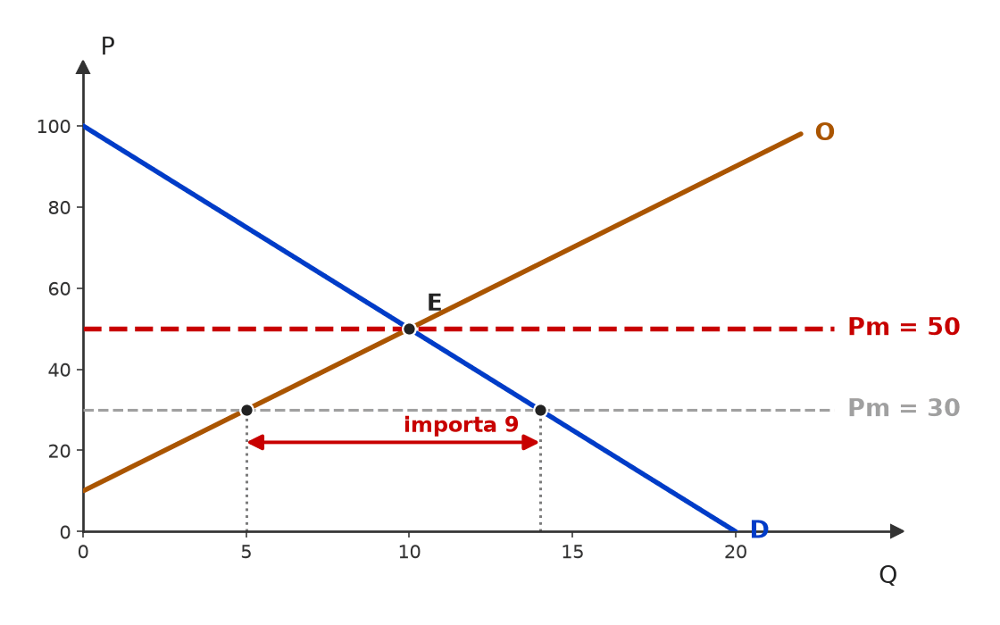
Com preço mundial de 50, igual ao de autarquia (E: Q = 10), a produção doméstica cobre toda a demanda e a importação é zero. Só um preço mundial menor geraria importação — a 30, por exemplo, demanda 14 e oferta doméstica 5: importa 9. E a demanda nunca passa de 20 unidades.
aviso: rótulo 'E' é cortado pela curva S
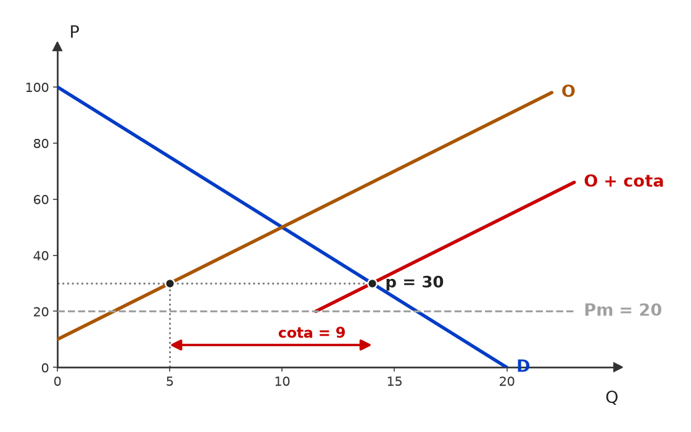
Supondo preço mundial de 20 (sem cota, importariam-se 13,5), a cota de 9 soma 9 unidades à oferta doméstica (O + cota). O preço INTERNO sobe até 30, onde demanda 14 = oferta doméstica 5 + cota 9. O preço mundial não se altera — e nada chega perto de 70.
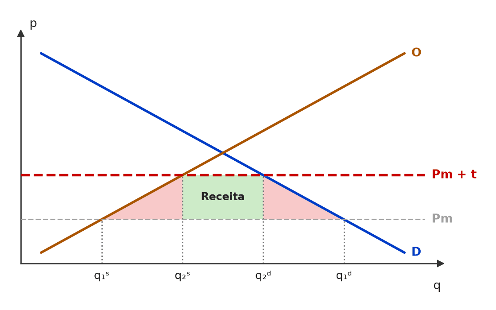
A tarifa t eleva o preço interno de Pm para Pm + t. O consumidor perde toda a faixa entre os dois preços, à esquerda da demanda: uma parte vira ganho do produtor, outra receita do governo (verde) e o resto é peso morto (vermelho). Quanto maior t, mais alta a faixa — maior a perda do consumidor e maior o peso morto.

Câmbio fixo e mobilidade perfeita: a expansão fiscal leva a IS para a direita (IS₁ → IS₂); no ponto provisório E′ os juros ficam acima de i*, entra capital, o BC compra divisas e a LM acompanha (LM₁ → LM₂). O equilíbrio final E₂ volta a i* com renda bem maior e câmbio inalterado.

Alta permanente da poupança em t₀: o produto per capita (em log) acelera só durante a transição e depois volta a crescer à taxa g, numa trajetória paralela e mais alta. O efeito permanente é sobre o NÍVEL; sobre a taxa de crescimento, é temporário.

Com o salário mínimo acima do equilíbrio (w mín > w*), as firmas contratam menos (Lᴰ) e mais pessoas querem trabalhar (Lˢ): a diferença é desemprego INVOLUNTÁRIO — gente disposta a trabalhar ao salário vigente sem encontrar vaga.

A demanda por trabalho é a curva do valor do produto marginal (P × PMgL): se a PMgL sobe, cada trabalhador rende mais à firma e a demanda se desloca para a DIREITA (Lᴰ₁ → Lᴰ₂), elevando emprego e salário.

Salário mínimo abaixo do equilíbrio (w mín < w*) não “morde”: o mercado continua em E, com o mesmo emprego L* e o mesmo salário w* — nenhum efeito sobre o desemprego.

Câmbio flutuante e mobilidade perfeita: a expansão fiscal leva a IS a IS₂ e o juro sobe só no ponto provisório E′; a entrada de capital aprecia a moeda, as exportações líquidas caem e a IS volta a IS₁. Como a LM não se move, o único ponto com i = i* é o inicial: a renda final é Y₁ (neutralização total).

Câmbio fixo e mobilidade perfeita: a expansão monetária leva a LM a LM₂ e o juro cai abaixo de i* no ponto provisório E′; a fuga de capital obriga o BC a vender reservas e recolher moeda, e a LM volta a LM₁. A economia termina em E₁, com a mesma renda e menos reservas.

Alta da poupança (s₁ → s₂): a curva de investimento sobe, o novo estado estacionário tem mais capital por trabalhador (k₁* → k₂*) e, pela função de produção, renda per capita de longo prazo maior (y₁* → y₂*).

Com s₁ abaixo da poupança de ouro, o estado estacionário k₁* fica à esquerda de k ouro. Elevar a poupança até sₒᵤᵣₒ leva a economia a k ouro, onde a distância entre f(k) e (n+δ)k — o consumo por trabalhador — é máxima: c* ouro > c₁*.

Câmbio flutuante e mobilidade perfeita: a expansão monetária leva a LM a LM₂ e o juro cai no ponto provisório E′; a saída de capital deprecia a moeda, as exportações líquidas sobem e a IS vai a IS₂. O equilíbrio final E₂ volta a i* com renda bem maior (Y₂ > Y₁).
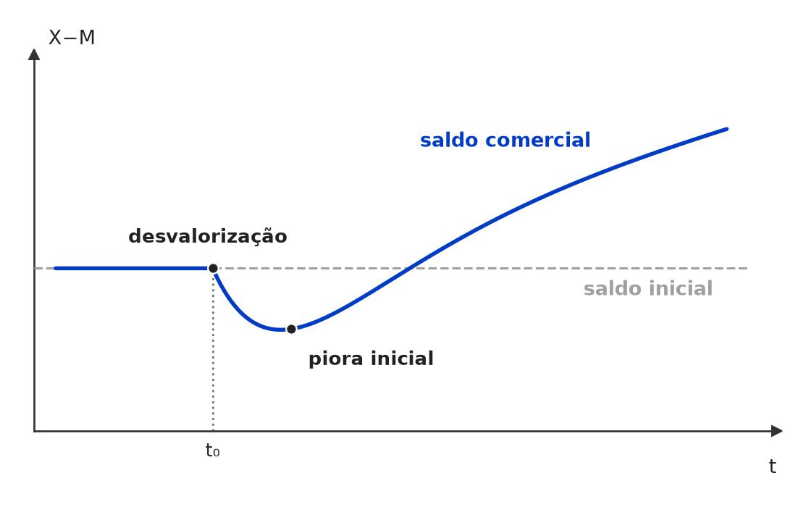
Logo após a desvalorização (t₀), o saldo comercial cai abaixo do nível inicial: os volumes ainda não reagiram e as importações ficaram mais caras. Com o tempo, o efeito-quantidade domina e o saldo sobe acima do ponto de partida — o desenho de um J.

Câmbio flutuante e mobilidade forte, mas imperfeita (BP mais plana que a LM): a expansão fiscal leva a IS a IS₂ e o ponto E′ fica acima da BP₁ (superávit). A apreciação desloca a BP para cima (BP₂) e faz a IS recuar só até IS₃: o equilíbrio E₃ tem renda maior que a inicial (Y₃ > Y₁).

Câmbio fixo e mobilidade fraca (BP mais íngreme que a LM): a expansão fiscal leva a IS a IS₂ e o ponto E′ fica abaixo da BP (déficit). Para defender o câmbio, o BC vende reservas e a LM recua (LM₁ → LM₂): o equilíbrio E₂ tem juro maior e renda só um pouco acima da inicial (Y₂ > Y₁).
aviso: rótulo 'E₁' é cortado pela curva IS1
aviso: rótulo 'E′' é cortado pela curva IS2
aviso: rótulo 'E₂' é cortado pela curva IS2

Câmbio fixo e baixa mobilidade (BP mais inclinada que a LM): a expansão fiscal leva a IS a IS₂; em E′, à direita da BP, há déficit externo, o BC vende reservas e a LM recua a LM₂ — no equilíbrio E₂ os juros são maiores que no início, e a renda sobe pouco.
aviso: rótulo 'E₁' é cortado pela curva IS1
aviso: rótulo 'E₂' é cortado pela curva IS2

O formato da FPP revela o custo de oportunidade: constante → reta; crescente → côncava (curva para fora); decrescente, como sob economias de escala → convexa em relação à origem (curva para dentro).

Sem comércio, o país consome sobre a própria FPP (A). Especializando-se em Y (P) e trocando ao preço internacional, passa a consumir sobre a fronteira de consumo, acima e à direita da FPP (C): mais X e mais Y do que em A.

Tecnologias diferentes geram FPPs com inclinações diferentes: em A, 1 t de soja custa 0,5 chip; em B, custa 2 chips. A tem vantagem comparativa em soja, e B, em chips.

Com um só fator e produtividade constante (Ricardo), cada unidade a mais de X custa sempre o mesmo de Y: a FPP é reta. Com fatores específicos e produtividade marginal do trabalho decrescente, cada unidade a mais de X custa cada vez mais Y: a FPP é côncava.

Na FPP côncava, a economia produz onde a reta de preços relativos tangencia a fronteira. Quando X fica relativamente mais caro, a reta fica mais inclinada e a tangência desliza de A para B: mais X, menos Y.
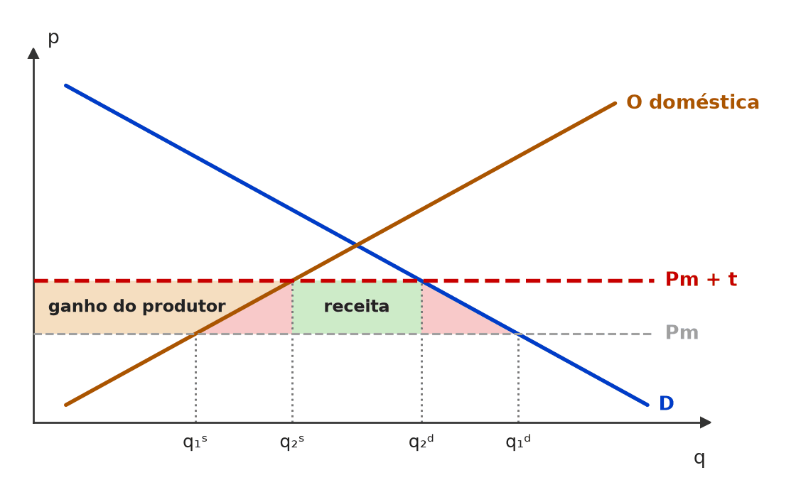
A tarifa eleva o preço interno de Pm para Pm + t: a produção doméstica sobe de q₁ˢ para q₂ˢ e o excedente do produtor cresce pela faixa ocre. O consumidor perde toda a faixa entre os dois preços: o ganho do produtor, a receita (verde) e o peso morto (vermelho).
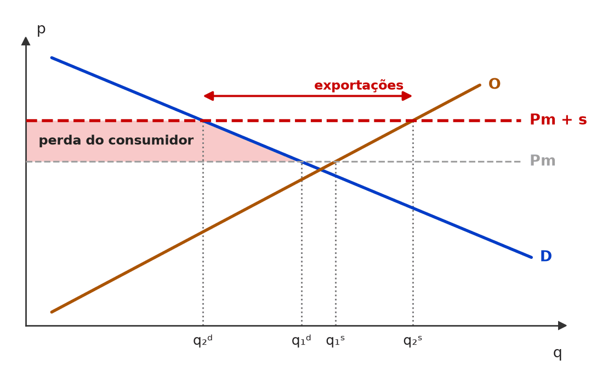
O subsídio s à exportação eleva o preço interno de Pm para Pm + s: o consumo doméstico cai de q₁ᵈ para q₂ᵈ e a produção sobe de q₁ˢ para q₂ˢ. A faixa vermelha é a perda do consumidor doméstico — o efeito negativo que o item nega.

Mercado de dólares: ao vender divisas das reservas, o Banco Central soma oferta à do mercado (O₁ → O₂). A cotação E (reais por dólar) cai de E₁ para E₂ — o real se VALORIZA.

Câmbio flutuante e mobilidade perfeita: a expansão monetária leva a LM a LM₂ e os juros caem no ponto provisório E′, abaixo da BP; a saída de capitais deprecia o câmbio, as exportações líquidas sobem e a IS vai a IS₂ — o equilíbrio E₂ volta a i*, com renda bem maior.
aviso: rótulo 'E₁' é cortado pela curva IS1

Câmbio fixo e mobilidade perfeita: a expansão fiscal leva a IS para a direita (IS₁ → IS₂) e os juros sobem só no ponto provisório E′, acima da BP; a entrada de capitais obriga o BC a comprar divisas, a LM acompanha (LM₁ → LM₂) e o equilíbrio final E₂ volta a i*, com renda bem maior.

Em todo estado estacionário, s·f(k) = (n+δ)k — é o ponto k*. A regra de ouro escolhe o k em que a inclinação de f(k) iguala a de (n+δ)k: ali a distância vertical entre produção e investimento necessário (o consumo) é máxima.

Câmbio fixo e mobilidade perfeita: a expansão monetária leva a LM a LM₂ e os juros caem no ponto provisório E′, abaixo da BP; a fuga de capitais obriga o BC a vender divisas e recolher moeda, e a LM volta a LM₁ — a renda não sai de Y₁.

Câmbio flutuante e mobilidade perfeita: a expansão fiscal leva a IS a IS₂ e os juros sobem no ponto provisório E′, acima da BP; a entrada de capitais aprecia o câmbio, as exportações líquidas caem e a IS volta a IS₁ — renda e juros terminam onde começaram (E₁).

Câmbio fixo e capitais imóveis (BP vertical): a expansão fiscal leva a IS a IS₂; em E′ a renda maior gera déficit externo, o BC vende reservas, a moeda encolhe e a LM recua até LM₂ — o equilíbrio E₂ tem a mesma renda Y₁ e juros mais altos.
aviso: rótulo 'E₁' é cortado pela curva IS1
aviso: rótulo 'E₂' é cortado pela curva LM2

Oferta (OR) e demanda (DR) relativas mundiais de calçados, com p = preço do calçado em unidades de vestuário. Abaixo de 3/7 (custo de oportunidade do Brasil) ninguém produz calçados; acima de 2 (custo do México) ninguém produz vestuário. Com p = 1, no trecho vertical, cada país se especializa no bem de sua vantagem comparativa e ambos ganham.

Câmbio flutuante e mobilidade alta, mas imperfeita (BP menos inclinada que a LM): a expansão fiscal atrai capitais e aprecia o câmbio, o que devolve parte do deslocamento da IS e sobe a BP (BP₁ → BP₂); no saldo, E₂ tem juros e renda maiores que E₁.

Alta de n: a reta de investimento necessário fica mais inclinada ((n₁+δ)k → (n₂+δ)k) e cruza s·f(k) mais cedo — o capital por trabalhador de estado estacionário cai (k₁* → k₂*). No novo equilíbrio, k fica constante, e o produto agregado cresce à nova taxa n₂, maior.

A alta da poupança (s₁ → s₂) desloca a curva de investimento para cima: em k₁* passa a sobrar investimento além da reposição, k cresce durante a transição e para em k₂* — nível maior, mas de novo sem crescimento de k.
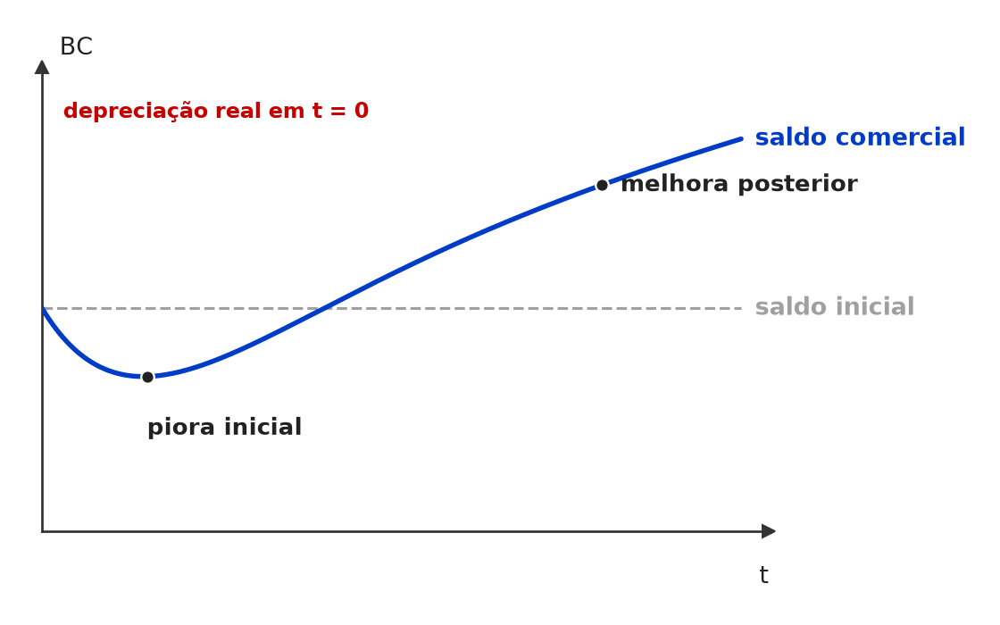
Logo após a depreciação real (t = 0), o saldo comercial piora: as quantidades ainda não reagiram e cada importação custa mais em moeda doméstica. Com o tempo, exportações e importações se ajustam e, valendo Marshall-Lerner, o saldo supera o nível inicial — o desenho do “J”.

Especializado em x (ponto P) e trocando a 1x = 3y no mercado mundial, o país passa da autarquia (A) para o consumo em C, fora da FPP. A fronteira de produção não se moveu: o que se expandiu foi a fronteira de consumo.

À esquerda, a FPP ricardiana é uma reta: cada 2 unidades extras de X custam sempre 2 de Y (custo de oportunidade constante). À direita, a FPP côncava de modelos com dois fatores e rendimentos decrescentes: cada 2 unidades de X custam cada vez mais Y.
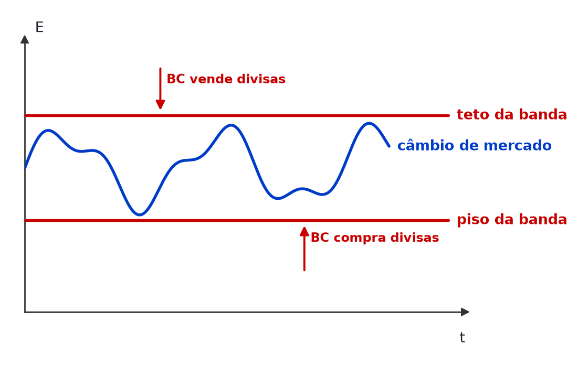
Na banda cambial, o câmbio oscila livremente entre o piso e o teto; o Banco Central só atua nos limites — vende divisas quando E encosta no teto e compra quando encosta no piso. Constante, o câmbio só seria num regime de câmbio fixo.
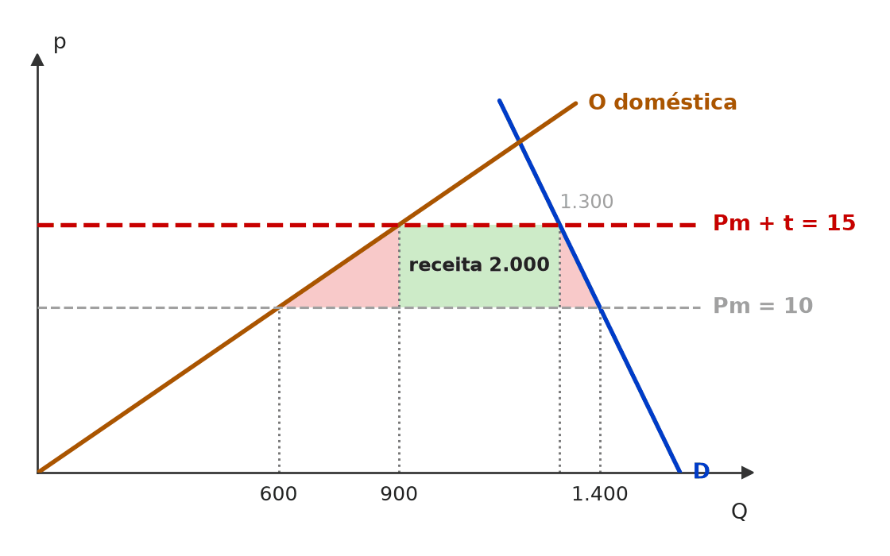
A tarifa de R$ 5 leva o preço interno de 10 a 15: a produção doméstica sobe de 600 para 900 e o consumo cai de 1.400 para 1.300. Os dois triângulos vermelhos são o peso morto: 750 (produção) + 250 (consumo) = R$ 1.000; o retângulo verde é a receita, 5 × 400 = R$ 2.000.

Com n maior, a reta de investimento de manutenção (n+δ)k fica mais inclinada: a mesma poupança precisa equipar mais trabalhadores novos, e o estado estacionário recua de k₁* para k₂* — logo, y* = f(k*) também cai.

Câmbio fixo e mobilidade perfeita: a expansão fiscal leva a IS para a direita (E → E′, juros acima de i*); a entrada de capitais obriga o Banco Central a comprar divisas, a LM também vai para a direita e o equilíbrio final E″ volta a i*, com renda ainda maior.
aviso: rótulo 'E' é cortado pela curva IS1
aviso: rótulo 'E′' é cortado pela curva IS2
aviso: rótulo 'E″' é cortado pela curva IS2

Câmbio fixo e mobilidade perfeita: a expansão monetária leva a LM para a direita e os juros para baixo de i* (E′); a saída de capitais obriga o Banco Central a vender reservas, a base monetária encolhe e a LM volta à posição inicial — a renda fica em Y₁, mas as reservas diminuíram.

Câmbio flutuante e mobilidade perfeita: a expansão fiscal leva a IS para a direita e os juros para cima de i* (E′); a entrada de capitais aprecia a moeda, as exportações líquidas caem e a IS volta à posição inicial — a renda de equilíbrio não muda.
aviso: rótulo 'E' é cortado pela curva LM
aviso: rótulo 'E′' é cortado pela curva LM
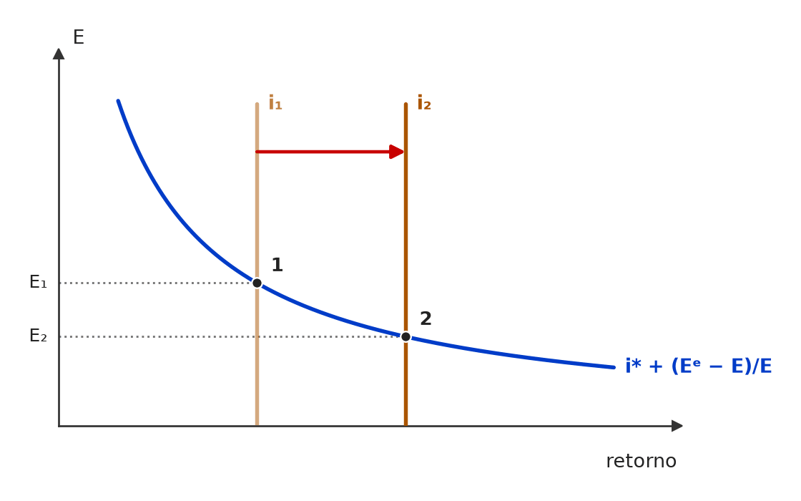
Mercado de câmbio pela paridade descoberta: o retorno do ativo doméstico é a reta vertical em i; o do ativo externo em moeda doméstica, i* + (Eᵉ − E)/E, cai quando E sobe. Com Eᵉ e prêmio de risco fixos, a alta de i (i₁ → i₂) leva o equilíbrio de E₁ para E₂ < E₁: a moeda doméstica se aprecia.

À direita de k*, a reta de reposição (n+g+δ)k passa acima do investimento s·f(k): o que se poupa não cobre a depreciação efetiva e k encolhe até k*. À esquerda, ocorre o inverso e k cresce.

No modelo AK, s·f(k)/k = sA não depende de k: a distância até δ é a taxa de crescimento, igual em qualquer k. Subir s de s₁ para s₂ afasta para sempre as duas retas — a taxa de crescimento sobe de γ₁ para γ₂ de forma permanente, e não só na transição.
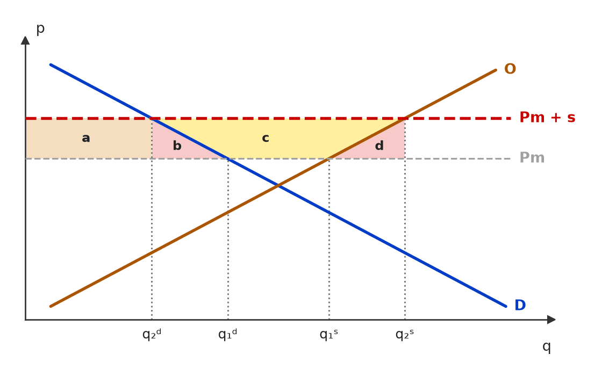
Com o subsídio s, o preço interno sobe de Pm para Pm + s. O consumidor perde a + b; o produtor ganha a + b + c; o governo gasta b + c + d (s × exportações). Saldo: perda líquida b + d — o ganho do produtor é pago pelo consumidor e pelo Tesouro.

A Suíça chegou antes e vende a P₁. A Tailândia teria custo menor em grande escala (P₂ < P₁), mas, partindo do zero, enfrenta C₀ > P₁ e não entra sem proteção: com economias externas, quem chega primeiro trava o padrão de comércio.

Câmbio fixo sem mobilidade de capital: a BP é vertical na renda que equilibra a balança comercial. A expansão fiscal leva a economia a E′, à direita da BP (déficit comercial); o Banco Central vende reservas, a LM recua para a esquerda e o equilíbrio final E″ tem a mesma renda Y₁ e juros maiores: a política fiscal é ineficaz.
aviso: rótulo 'E' é cortado pela curva IS1
aviso: rótulo 'E′' é cortado pela curva IS2
aviso: rótulo 'E″' é cortado pela curva IS2

A fuga de capitais eleva os juros exigidos (BP₁ → BP₂). No câmbio fixo, o Banco Central vende reservas, a LM recua e a renda cai (Y₂ < Y₁); no câmbio flexível, a moeda se deprecia, as exportações líquidas sobem, a IS avança e a renda até aumenta.
aviso: [painel 1] rótulo 'E₁' é cortado pela curva IS
aviso: [painel 1] rótulo 'E₂' é cortado pela curva LM2
aviso: [painel 2] rótulo 'E₁' é cortado pela curva BP1
aviso: [painel 2] rótulo 'E₂' é cortado pela curva LM

A mesma expansão fiscal (IS₁ → IS₂) leva a economia a E′. Com baixa mobilidade (BP mais inclinada que a LM), E′ fica abaixo da BP: déficit. Com alta mobilidade (BP menos inclinada que a LM), E′ fica acima da BP: superávit.
aviso: [painel 1] rótulo 'E′' é cortado pela curva IS2
aviso: [painel 2] rótulo 'E' é cortado pela curva BP

Alta mobilidade imperfeita (BP menos inclinada que a LM) e câmbio flutuante: a expansão fiscal leva a economia a E′, acima da BP₁ (superávit externo); a moeda se aprecia, as exportações líquidas caem e a IS recua só em parte (IS₃): no equilíbrio final E″ a renda ainda é maior que em E, mas menor que em E′.
aviso: rótulo 'E' é cortado pela curva LM
aviso: rótulo 'E' é cortado pela curva BP1
aviso: rótulo 'E′' é cortado pela curva LM
aviso: rótulo 'E″' é cortado pela curva IS3

Câmbio flutuante e mobilidade alta: a expansão monetária leva a LM para a direita e os juros para baixo (E′); a saída de capitais deprecia a moeda, as exportações líquidas sobem e a IS também vai para a direita — o equilíbrio final E″ tem renda ainda maior: a depreciação amplia a eficácia.
aviso: rótulo 'E' é cortado pela curva IS1

Baixa mobilidade (BP mais inclinada que a LM) e câmbio flutuante: a expansão fiscal leva a economia a E′, abaixo da BP₁ (déficit externo); a moeda se deprecia, as exportações líquidas sobem, IS e BP vão para a direita e o equilíbrio final E″ tem renda ainda maior.
aviso: rótulo 'E' é cortado pela curva IS1
aviso: rótulo 'E′' é cortado pela curva BP1
aviso: rótulo 'E′' é cortado pela curva IS2
aviso: rótulo 'E″' é cortado pela curva IS3

O consumo de estado estacionário é a distância vertical entre f(k) e (n+δ)k. Ela é máxima em k*ouro, onde a inclinação de f(k) (o PMgK) iguala n+δ. A taxa de poupança da regra de ouro é a que leva a economia exatamente a esse k; poupar mais ainda eleva k e y, mas encolhe c.
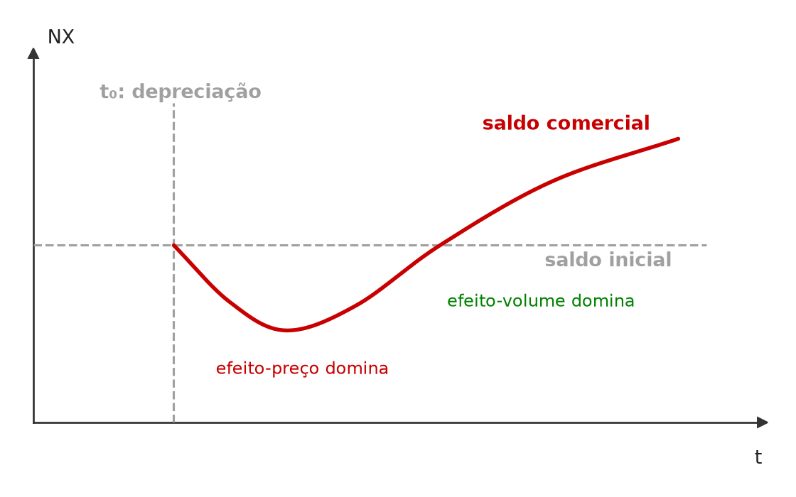
Logo após a depreciação (t₀), o saldo comercial CAI: as importações encarecem em moeda nacional antes que os volumes reajam (efeito-preço). Depois, exportações sobem e importações caem (efeito-volume), e o saldo termina acima do nível inicial — o desenho de um J.

A fuga de capitais eleva a BP (BP₁ → BP₂). No câmbio fixo, o BC vende reservas, a LM recua (LM₁ → LM₂) e a renda cai (Y₂ < Y₁); no flexível, a moeda se deprecia, a IS avança (IS₁ → IS₂) e a renda não cai.
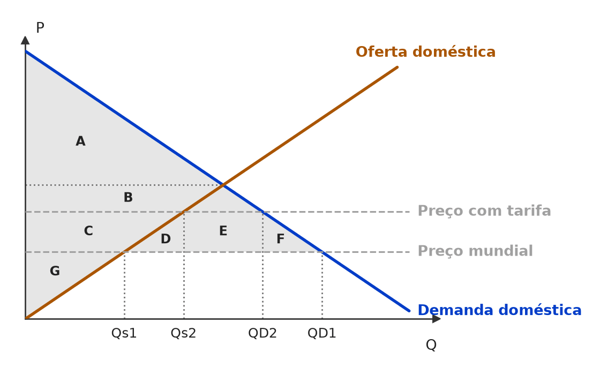
Tarifa de importação sobre o aço: oferta e demanda domésticas, preço mundial e preço com tarifa (áreas A a G). (figura redesenhada; traçado aproximado)

À esquerda, Ricardo: FPP reta e preço mundial diferente do custo interno levam a produção ao canto (P, especialização completa). À direita, Heckscher-Ohlin: FPP côncava; a produção vai ao ponto de tangência com o preço mundial (P), onde o país ainda produz os dois bens (especialização incompleta).

A taxa de crescimento de k é a distância entre s·f(k)/k (decrescente, pelos rendimentos marginais decrescentes) e n+δ. Com os mesmos parâmetros, o país pobre (k menor) está mais longe de k* e cresce mais rápido: γ_pobre > γ_rico.
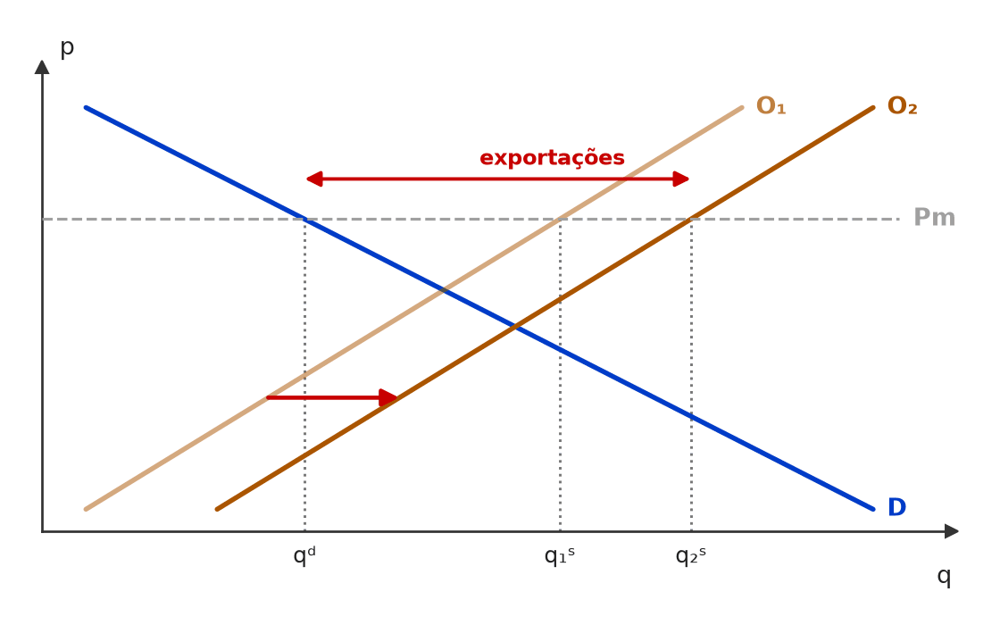
País pequeno exportador ao preço mundial Pm. O subsídio à produção desloca a oferta de O₁ para O₂: ao mesmo Pm, a produção sobe de q₁ˢ para q₂ˢ, o consumo interno (qᵈ) não muda e as exportações (oferta − demanda) aumentam.
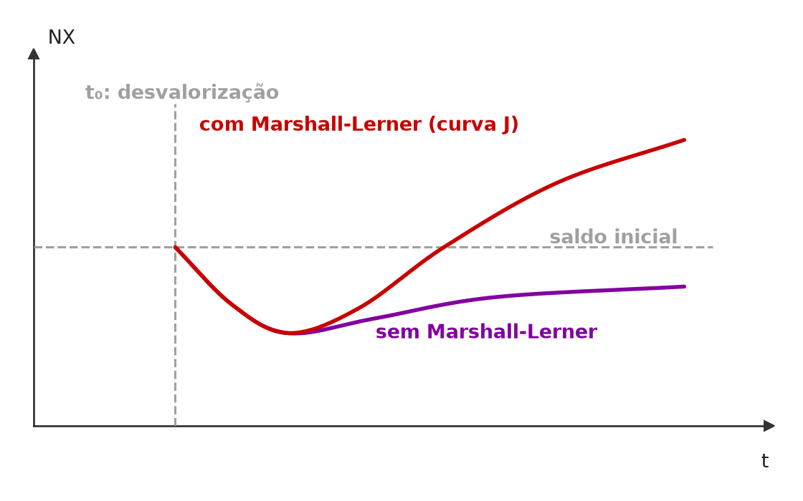
As duas trajetórias começam iguais: o saldo cai logo após a desvalorização (t₀). Só quando vale Marshall-Lerner (soma das elasticidades, em módulo, maior que 1) o efeito-volume supera o efeito-preço e o saldo termina ACIMA do inicial; sem a condição, ele se recupera em parte, mas fica abaixo.

Câmbio fixo, mesma expansão fiscal (IS₁ → IS₂). Alta mobilidade: E′ fica acima da BP, entra capital, o BC compra divisas e a LM avança (LM₁ → LM₂) — a renda vai além de E′. Baixa mobilidade: E′ fica abaixo da BP (déficit), o BC vende reservas, a LM recua e o ganho de renda é menor.

Na autarquia, o país consome sobre a própria FPP (A). Com comércio, produz em P, troca ao preço mundial ao longo da linha de comércio e consome em C — mais dos dois bens que em A e fora da FPP. A FPP não se move: o que se amplia é o consumo.

Com W maior e P constante, o salário real sobe de (W/P)* para W₁/P, acima do equilíbrio: as firmas demandam menos trabalho (L₁ᴰ) e mais pessoas querem trabalhar (L₁ˢ) — surge excesso de oferta de trabalho (desemprego).

A forma da FPP espelha o custo de oportunidade: reta = custo constante (Ricardo); curvada para fora = custo crescente (caso usual); curvada para dentro, convexa em relação à origem = custo decrescente, efeito das economias de escala.

Na autarquia, a FPP ricardiana (reta: 1 X custa 2 Y) é também a fronteira de consumo, e o país consome em A. Especializado em X (P) e trocando a 3 Y por X, consome sobre a nova FPC, que gira para fora a partir de P: C tem mais X e mais Y que A.
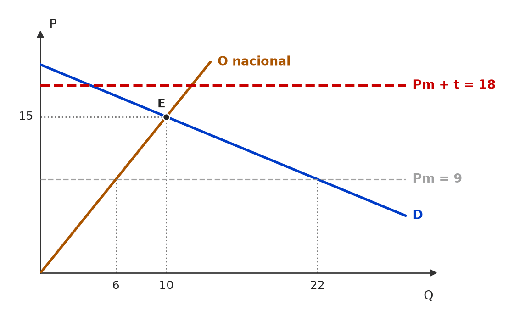
Com a tarifa de 9, o importado chega a 9 + 9 = 18, acima do preço de autarquia (15): a tarifa é proibitiva, ninguém importa e o mercado volta ao equilíbrio interno E (Q = 10, P = 15).
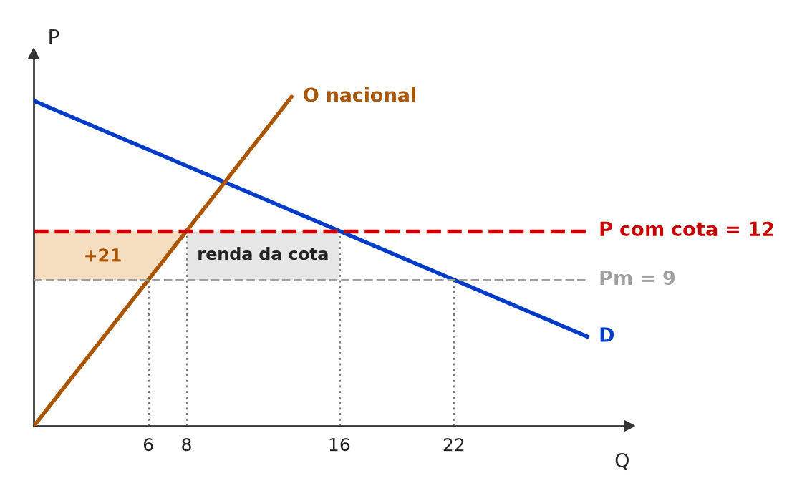
A cota de 8 milhões de sacas eleva o preço interno de 9 para 12: a produção nacional sobe de 6 para 8 e o excedente do produtor cresce pelo trapézio ocre, (6 + 8) × 3 ÷ 2 = 21. O retângulo cinza é a renda da cota (3 × 8 = 24), que fica com quem detém as licenças.
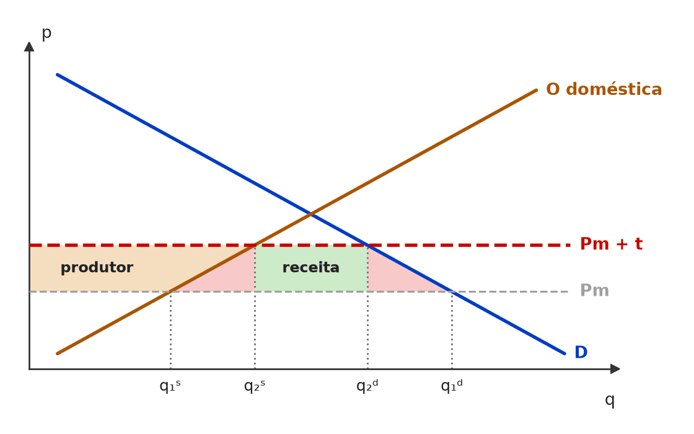
Eliminar a tarifa derruba o preço interno de Pm + t para Pm: o produtor perde a faixa ocre (vai para o consumidor), a receita verde também passa ao consumidor e os dois triângulos vermelhos de peso morto são recuperados — o excedente total cresce exatamente por eles.

Em t₀ a taxa de poupança sobe. A trajetória de ln y fica mais inclinada só durante a transição e depois volta a correr paralela à antiga, à mesma taxa g: o efeito permanente é de NÍVEL, não de crescimento.

Com δ maior, a reta (n+δ)k fica mais inclinada e o estado estacionário recua de k₁* para k₂*. Como f(k) é côncava, a inclinação de f — o produto marginal do capital, que remunera o capital — é maior em k₂* do que em k₁*.

Economia acima da regra de ouro (s alto). Com n maior, k* recua de k₁* para k₂*, mas, com s fixo, o consumo c* = (1−s)·f(k*) — a distância entre f(k) e s·f(k) — encolhe: c₂* < c₁*.